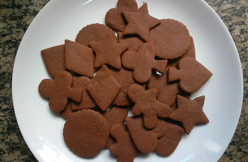

Ideais para um snack a meio da tarde,
na companhia de um bom chocolate quente,
um chá ou um café, estas bolachas de chocolate
são uma verdadeira tentação.

Ingredientes:
450gr manteiga
450gr açúcar
2 ovos
3 CCH extracto de baunilha
510gr farinha
150gr cacau em pó
1 CCH sal
Modo de Preparação:
Bata a manteiga com o açúcar mascavado e em pó até obter uma massa espessa mas cremosa.
Junte os ovos à massa e misture bem.
Peneire a farinha, o cacau e o sal para o preparado, coloque baunilha e volte a mexer.
Estenda a massa em duas folhas de papel vegetal e leve à geladeira por uma hora
Preaqueça o forno a 180ºC.
Retire a massa da geladeira e estanda entre duas reglas niveladoras, para obter a mesma espesura em todas as bolachas.
Cortar as bolachas com os cortadores que quiser
Forre um tabuleiro com papel vegetal e coloque as bolachas com aproximadamente 2cm de distancia entre elas.
Leve o tabuleiro ao forno e deixe as bolachas cozinhar durante 15 a 20 minutos.